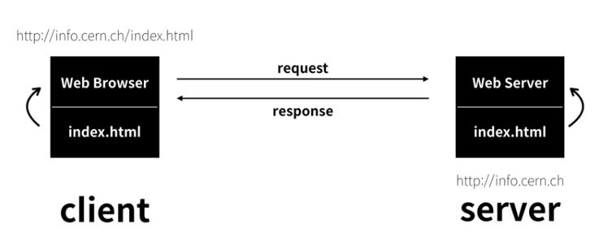

The World Wide Web (abbreviated WWW or the Web) is an information space where documents and other web resources are identified by Uniform Resource Locators (URLs), interlinked by hypertext links, and can be accessed via the Internet.[1] English scientist Tim Berners-Lee invented the World Wide Web in 1989. He wrote the first web browser computer program in 1990 while employed at CERN in Switzerland.[2][3] The Web browser was released outside CERN in 1991, first to other research institutions starting in January 1991 and to the general public on the Internet in August 1991.
Hypertext Markup Language(HTML) is the standard markup language for creating web pages and applications.
: 태그(TAG)의 한 형태
<7강 혁명적인 변화>
W3C 웹을 만드는 곳. 페이지 소스를 보라.
이것을 이해할 수 있으면 어떤 느낌일까.
태그 문법 하나만 알아도 다르게 보이지 않을까
<8강 통계에 기반한 학습> : https://www.advancedwebranking.com/html/
→ 세상 모든 웹사이트 대상으로 빈도수가 가장 많은 태그 종류를 확인할 수 있다.
<제9강 줄바꿈> br 또는 p /p를 활용한다.
생활코딩은 이고잉이라는 익명의 프로그래머가 만든 일반인들에게 프로그래밍을 알려주는 것을 목적으로 하는 비영리 커뮤니티, 웹사이트, 페이스북 그룹을 말한다. 이고잉은 오픈튜토리얼이라는 교육 사이트를 만들어서 이 사이트에서 하나의 채널로 생활코딩을 개설하였다. 오픈튜토리얼에서 사용자들은 누구나 자유주제로 자신의 교육 채널을 만들 수 있다. 페이스북 그룹의 경우 4만명이 넘어섰고 하루에 올라오는 글도 수십개가 넘는다. 가끔 기술적 문제를 겪는 초보들에게 중견급 프로그래머들이 친절한 답변을 달아주기도 한다.
이고잉은 가명을 쓰는 이유에 대하여 사적인 영역과 공개적인 프로그래머로서의 활동을 분리하고 싶어서라고 밝힌바 있는데, 유명해지면 이를 상업화하는 것이 일반적인 세태에서 대범한 일이라고 할 수 있다. 사실 이러한 비영리 목적의 순수성이 커뮤니티에 다양한 프로그래머의 참여를 불러 일으켰다고 할 수 있다. 어찌보면 이두희가 만든 멋쟁이사자처럼과 비슷하다고 볼 수 있는데 사자처럼은 오프라인 활동이 주가되고, 생활코딩은 온라인수업(유튜브와 오픈튜토리얼을 이용한) 중심이다. <출처: 나무위키>
<10강 HTML이 중요한 이유>
검색엔진에서 단어 검색시 적용되는 것이 "형식"이다.
같은 게시글을 작성하더라도 제목에 Head 태그를 활용하거나(지식인), 단순히 제목처럼
보이게 하는 방법(일반인)이 있다. 하지만 검색간 일반인 방법을 빌린 게시글을 검색되지
않을 가능성이 크다.

<11강 최후의 문법 속성 & img>
위와 같은 src 또는 width를 속성(Attribute)라 부른다.
htttps://unsplash.com 저작권에 구애받지 않고 고화질의 사진을 활용할 수 있다.
<12강 부모 자식과 슈퍼스타들>
목차를 완성하자. li /li의 부모 태그로 ul /ul(unordered list) 또는
ol /ol(ordered list)을 활용하자.
<13강 문서의 구조와 슈퍼스타들>
"너는 누구니"라는 부분이 오류가 난다? UTF-8 형식으로 코딩이 제작된다.
웹페이지를 열 때는 UTF-8 형식으로 열게 하려면? 어떻게 해야 할까. meta를 활용하자.
<14강 태그의 제왕>
HTML 즉, Hyper Text Markup Language의 핵심은 바로 "LINK"이다.
검색창에 "html specification"을 쳐보자. W3C에서 제공하는 HTML 공식 설명서를 링크걸자
a href:"웹페이지 주소" 으로 링크를 걸고, 속성 부여는 target으로 새창 열기 여부,
title으로 링크 직전 내용을 표시할 수 있다.
<15강 웹사이트 완성>
웹페이지를 모아 웹사이트를 제작해보자.
<16강 원시웹>
Internet vs WEB : 도시 vs 건물 / 도로 vs 자동차 / 운영체제 vs 프로그램1
WEB 이외에 FTP, email 등이 있다.
1960년 인터넷 등장: 미국이 핵공격 당할 시 통신시스템 마비할 것으로 예상.
통신의 필요성이 대두되면서 인터넷이 등장함. 중앙집중형 통신체계 탈피
1980년 스위스 유럽입자분리연구소가 있음. 세상에 힉스입자가 존재하는지 확인하기
위해 연구소가 설립됨. 그 이후 픽터 힉스는 노벨 물리학상을 수상함. 12,000명이 모여있음.
버너스 리 인턴으로 취직함. [Enquire Within] 저서로 만든 웹의 전신 프로그램을 만듬
1990년 연구소에 인터넷이 들어오면서 10월 웹페이지 편집기, 11월 웹 브라우저(WWW) 등장
12월 웹서버(info.cern.ch) 발명. "웹의 메소포타미아 급", primitive web
<17강 인터넷을 여는 열쇠(서버와 클라이언트)  웹서버를 구축하거나 서버 구축을 대행하는 웹호스팅을 할 수도 있다. 웹호스팅으로 시작, 웹서버를 통해서 원리를 파악하는 게 좋다.